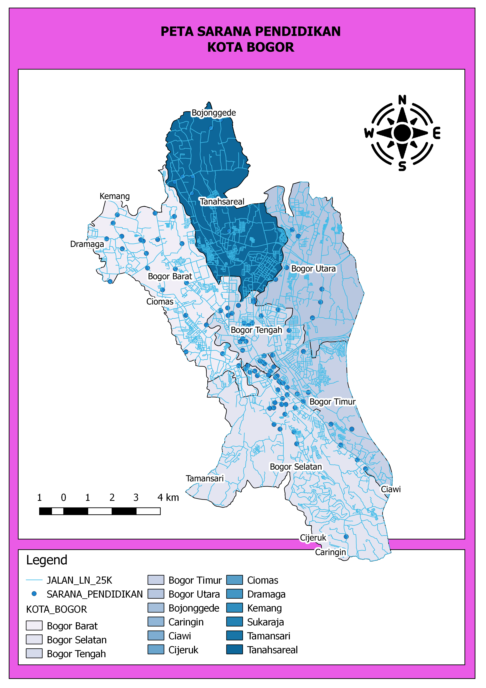

Nama Sekolah
|
Alamat
|
Gambar Peta
|
| SMA Negeri 1 Bogor |
Jl. Ir. H. Juanda No.16, RT.04/RW.01, Paledang, Kecamatan Bogor Tengah, Kota Bogor |
 |
| SMA Negeri 2 Bogor |
Jl. Kranji Ujung No.1, RT.03/RW.04, Budi Agung, Kec. Tanah Sereal, Kota Bogor |
| SMA Negeri 3 Bogor |
Jl. Pakuan Indah No.4, RT.01/RW.01, Baranangsiang, Kec. Bogor Tim., Kota Bogor |
| SMA Negeri 4 Bogor |
Jl. Dreded No.36, RT.06/RW.07, Empang, Kec. Bogor Sel., Kota Bogor |
| SMA Negeri 5 Bogor |
Jl. Manunggal No.22, Menteng, Kec. Bogor Bar., Kota Bogor |
| SMA Negeri 6 Bogor |
Jl. Walet No.13, RT.02/RW.06, Tanah Sereal, Kec. Tanah Sereal, Kota Bogor |
| SMA Negeri 7 Bogor |
Jl. Palupuh Raya No.9, RT.05/RW.02, Tegal Gundil, Kec. Bogor Utara, Kota Bogor |
| SMA Negeri 8 Bogor |
Jalan BTN Ciparigi No.60, RT.04/RW.02, Ciparigi, Kec. Bogor Utara, Kota Bogor |
| SMA Negeri 9 Bogor |
Jl. Kartini No.1, RT.01/RW.02, Ciwaringin, Kecamatan Bogor Tengah, Kota Bogor |
| SMA Negeri 10 Bogor |
Jl. Pinang Raya Ruko Taman Yasmin Sektor VI No.Komplek, RT.06/RW.09, Curugmekar, Kec. Bogor Bar., Kota Bogor |
| Institut Pertanian Bogor |
Jl. Raya Dramaga Kampus IPB Dramaga Bogor |
| Universitas Pakuan |
Jl. Pakuan, Tegallega. Kecamatan Bogor Tengah, Kota Bogor |
| Universitas Djuanda |
Jln. Tol Ciawi No.1, Ciawi-Bogor |
| Universitas Pertahanan Indonesia |
Kawasan IPSC Sentul, Sukahati, Kec. Citeureup, Bogor |
| Universitas Nusa Bangsa |
Jalan KH. Sholeh Iskandar KM. 4, Tanah Sereal, Cibadak, Tanah Sereal, Bogor |
| Universitas Ibn Khaldun Bogor |
Jl. K. H. Sholeh Iskandar Km. 2 Kedung Badak Tanah Sareal. Bogor |
| Politeknik Siber dan Sandi Negara |
Ciseeng, Bogor |
| Institut Tazkia |
Jl. Ir. H. Djuanda No. 78 Sentul, Citaringgul |